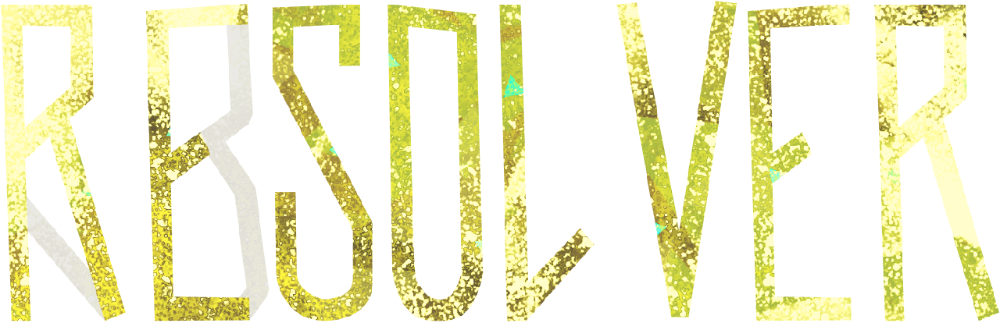

Currently in beta testing. The mod will overhaul the NPC system, add new items, emotes and moves, as well as rebalance the combat system.
Closed Beta Test Trailer
It was filmed on the pre-CBT version of the mod, the new attacks have already been rebalanced a couple of times. And a lot more changes have been added!
Participate in the beta test